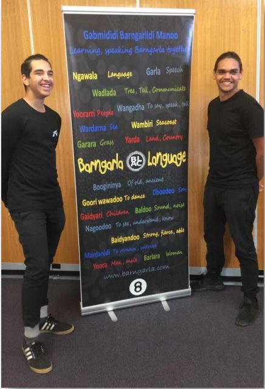

| Barngarla | Meaning |
| Babarngoo | Old acquaintance; friend |
| Goonyala | Friend; relation |
| Maliri | Peaceable; friendly |
| Mangarlidhi | To be peaceable; to be friendly |
| Marngarli (peaceable)-dhi (to be) | |
| Mardana | Acquaintance; friend; person seen before |
| Marda (old place)-na (past) | |
| Marngarla | Peace; friendly; friend; (opposite of hostile) |
| Mooyoonara | Safe; unharmed; preserved |
| Ngalira | Friend; confidant |
| Ngananda | Friendly; hospitable |

“Ngai (yoora) Barngarla marngarla. ” 🔊
“I am a friendly Aboriginal (person).”
“Mirinya gawoo maraba mooyoonara badnadawoo. ” 🔊
“An Aboriginal person can travel safe(ly) without water.”
Mirinya (an Aboriginal) gawoo (water) maraba (without) mooyoonara (safe) badnadawoo (walk)